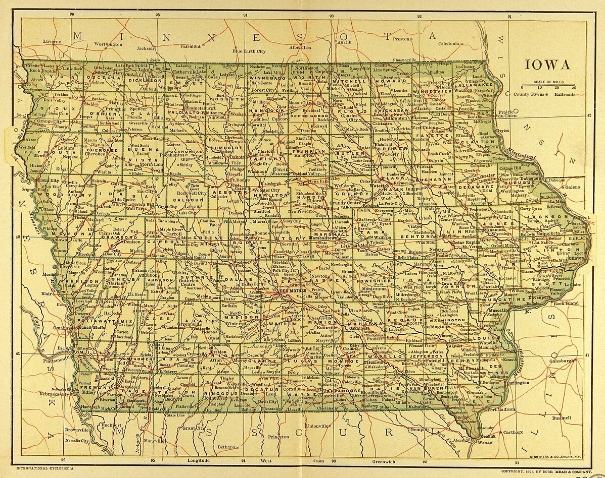

A landlocked state in the middle of America, Iowa is easily overlooked. However, it is a political and cultural testing ground. Between being the first state to vote in the presidential primaries and the third state to ratify same-sex marriages in 2009, there are many achievements and wonders throughout its counties. This website is small, but I do hope it will spark interest in exploring more about the Hawkeye State.

Dodd, Mead, and Company, Public domain, via Wikimedia Commons